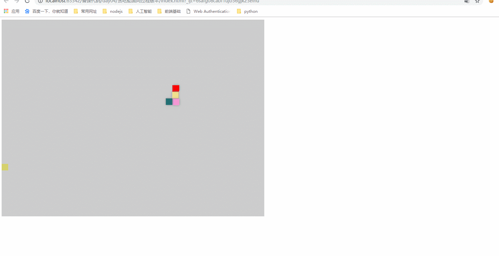
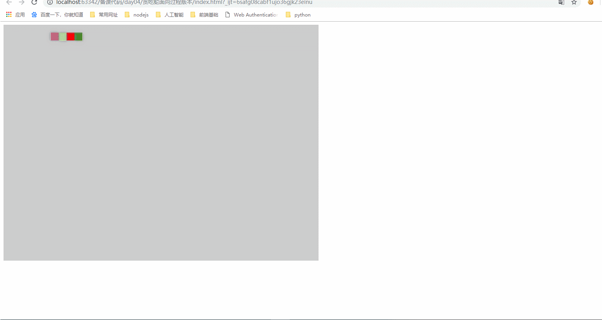

面向过程04：事件处理01
- 本小节底部有动图展示原理
//思考：每一条蛇都应该有移动的方法，我们是直接写一个全局函数还是给Snake构造函数添加原型？
/*蛇移动：move方法*/
Snake.prototype.move = function ( map ) {
//this:指向调用这个方法的蛇对象
//1.开始移动
//1.1 蛇的每一小节位置前移：倒着遍历蛇的身体，修改每一节身体的位置是前一节的位置
for(var i = this.body.length-1;i>0;i--){
this.body[i].x = this.body[i-1].x;
this.body[i].y = this.body[i-1].y;
};
//1.2 蛇头的位置取决于移动方向
switch (this.direction){
case 'left':
this.body[0].x -= 1;
break;
case 'right':
this.body[0].x += 1;
break;
case 'top':
this.body[0].y -= 1;
break;
case 'bottom':
this.body[0].y += 1;
break;
};
//1.3 先把以前的旧蛇移除
this.remove();
//1.4 根据新的body显示新蛇
this.render(map);
};
/*蛇remove方法：移除旧蛇*/
Snake.prototype.remove = function ( ) {
////this:指向调用这个方法的蛇对象
for(var i = 0;i<this.snakeElements.length;){
this.snakeElements[i].parentNode.removeChild(this.snakeElements[i]);//页面移除
this.snakeElements.shift();//内存移除
};
}
/*蛇eat方法：吃食物*/
Snake.prototype.eat = function (food,map ) {
//this:指向调用这个方法的蛇对象
//1 先记录当前蛇尾的位置
var snakeLastX = this.body[this.body.length-1].x;
var snakeLastY = this.body[this.body.length-1].y;
//3.2 将食物放到蛇尾中
this.body.push( {x:snakeLastX,y:snakeLastY,color:food.bgColor});
//3.3 重新显示蛇的身体
//(1)先移除旧蛇
this.remove();
//(2)重新显示新蛇
this.render(map);
}
//2.注册键盘事件
//键盘事件
window.onkeydown = function ( e ) {
e = e || window.event;
//获取键盘按键
/*细节：蛇不能倒着移动*/
switch (e.keyCode){
case 37:
//left
if (snake.direction != 'right'){
snake.direction = 'left';
}
break;
case 38:
//top
if(snake.direction != 'bottom'){
snake.direction = 'top';
}
break;
case 39:
//right
if (snake.direction != 'left'){
snake.direction = 'right';
}
break;
case 40:
//bottom
if (snake.direction != 'top'){
snake.direction = 'bottom';
}
break;
};
//1.蛇开始移动
snake.move(map);
//2 边界检测
if (snake.body[0].x < 0 || snake.body[0].x > map.offsetWidth/snake.width){
alert('Game Over');
//游戏重新开始：刷新当前页面
window.location.reload();
};
if (snake.body[0].y < 0 || snake.body[0].y > map.offsetHeight/snake.height){
alert('Game Over');
//游戏重新开始：刷新当前页面
window.location.reload();
};
//3.吃食物：只要蛇头位置与食物位置重合，说明吃到了食物
var snakeHeadX = snake.body[0].x*snake.width;
var snakeHeadY = snake.body[0].y*snake.height;
if (snakeHeadX == food.x && snakeHeadY == food.y){
snake.eat(food,map);
//4.生成新的食物：只有蛇迟到了食物，才需要生成新的食物
//4.1 先移除旧食物
food.ele.parentNode.removeChild(food.ele);
//4.2 生成新食物并且添加到页面
food = new Food();//新建一个食物
food.render(map);//显示到地图上
}
}
- 蛇移动原理

- 蛇吃食物原理
